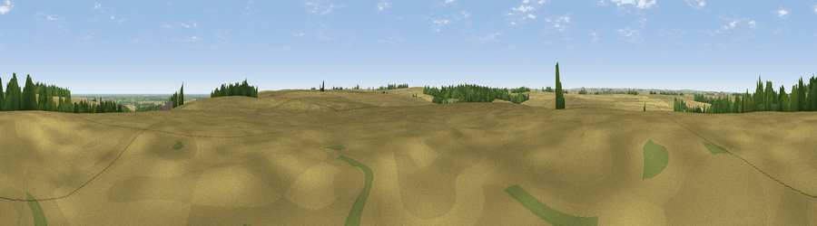

Viewpoint near Wold Newton
#26786 in England · top 51% of its area beats it · near Wold Newton · access?Where it is
The exact computed spot (TF 25166 95703). Click the marker for map links.
Public access: no public right of way or access land is recorded at this exact spot — it may be on private land. Computed from Natural England's CRoW access layer and OpenStreetMap rights of way — not the legal definitive map. Always verify locally.
The view, rendered

A 360° render of this exact spot computed from the terrain model, tree cover and land cover — summer colours, afternoon light, calibrated against photographs of famous viewpoints. Real trees, hedges and buildings will differ in detail.
The panorama
Grey silhouette: terrain skyline in each direction (720 bearings, Earth curvature and refraction included). Dashed green: skyline with trees (+15 m) and buildings (+8 m) as obstacles. Blue strip: how far the ground is visible on each bearing.
Where the view opens
Wedge length = distance to the farthest visible ground on that bearing (vegetation-aware). Rings at 10, 25 and 50 km.
What fills the view
87% cropland · 5% woodland · 5% grassland · 2% water
Angular shares of the visible panorama (visual magnitude), not map area. Landscape diversity 0.24 (0–1 Shannon).
Key numbers
More beautiful places nearby
The staircase of upgrades: each row has a higher view potential than everything closer. Driving times are estimates from straight-line distance, calibrated against real road routing — check an actual route before setting out.
| Place | Direction | Drive | Score |
|---|---|---|---|
| Viewpoint near Wold Newton | NNE · 1 km | ~4 min | 57.3 |
| Viewpoint near Walesby | WSW · 12 km | ~22 min | 57.9 |
| Viewpoint near Claxby | W · 13 km | ~24 min | 61.7 |
| Viewpoint near Claxby | W · 13 km | ~24 min | 64.9 |
| Viewpoint near Claxby | W · 14 km | ~25 min | 71.5 |
| Garrowby Hill (A166 crest) | NW · 75 km | ~99 min | 71.9 |
| Viewpoint near Bempton | N · 79 km | ~103 min | 72.8 |
| Viewpoint near Acklam | NNW · 79 km | ~103 min | 73.8 |
53.44324, -0.11700 · source: osm peak · position refined by local search. Computed location — check access rights before visiting.